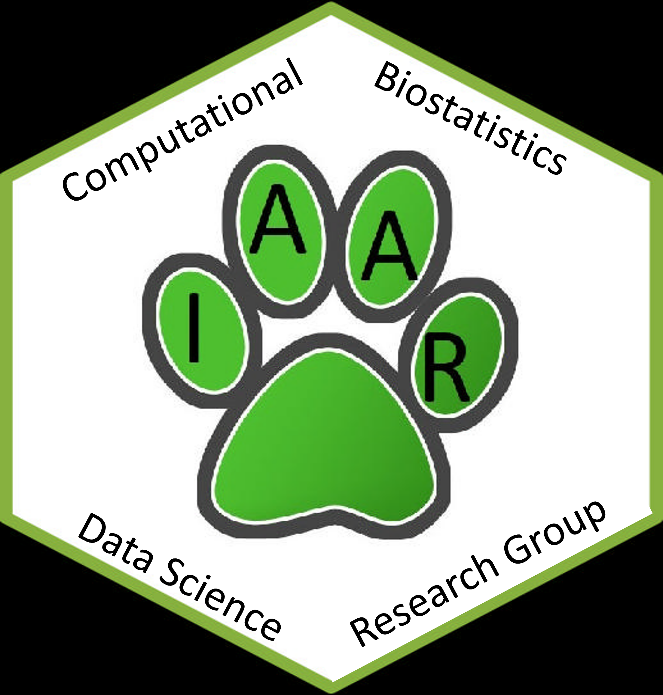

Welcome
About me
I was born and raised in Puerto Rico and hold a Ph.D. in Statistics from Iowa State University under the mentorship of Dr. Ranjan Maitra . Currently, I'm an Associate Professor of Statistics at the University of Puerto Rico at Mayaguez. My research focuses on Responsible Machine Learning and Artificial Intelligence (ML/AI), in particular supervised and unsupervised learning methods such as clustering and dimension reduction methods. I apply these methods in functional magnetic resonance imaging (fMRI), public health, image analysis, data mining, and data visualization.
Contact
Department of Mathematical Sciences
University of Puerto Rico at Mayaguez
Office: Monzón 208-B
Phone: 787-832-4040 Ext. 5817
Email: israel.almodovar@upr.edu
